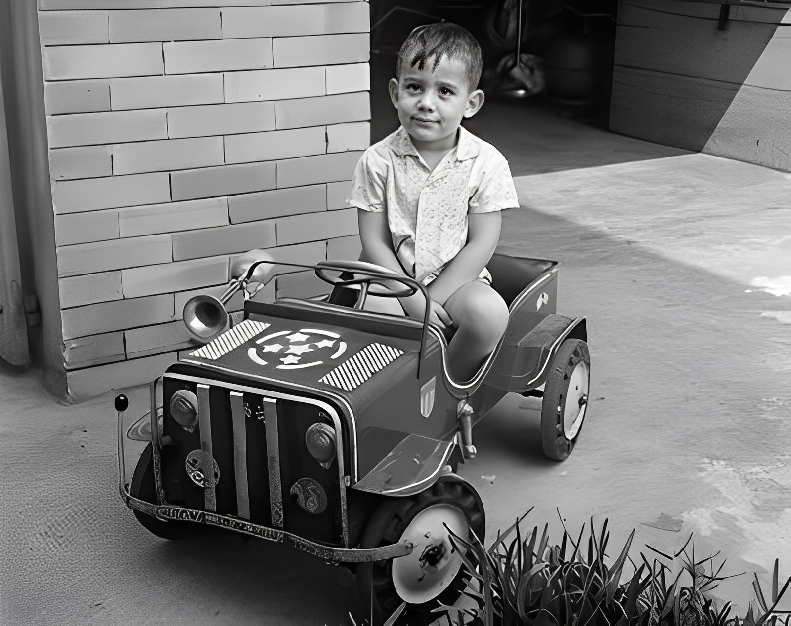
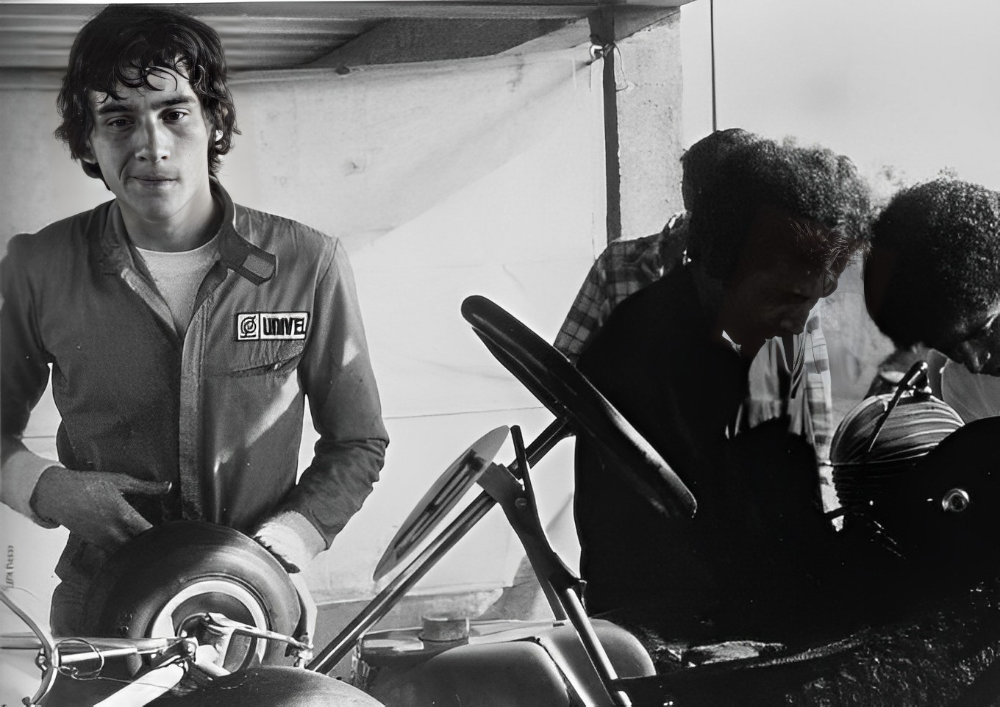
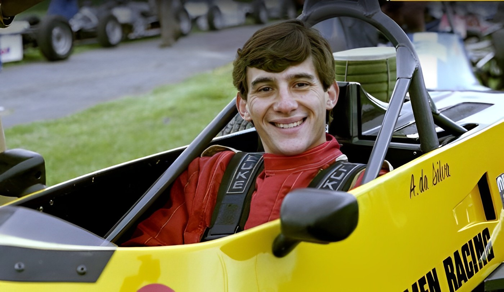
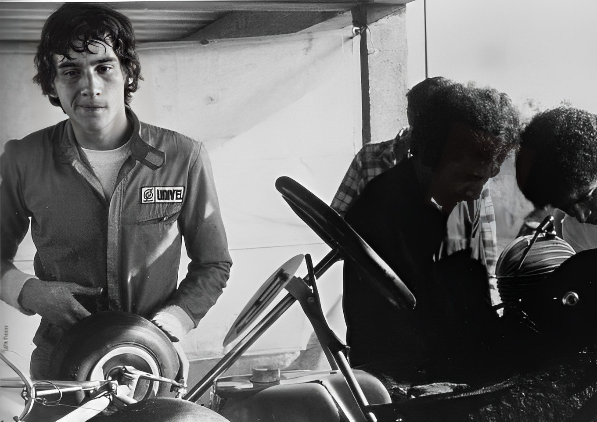
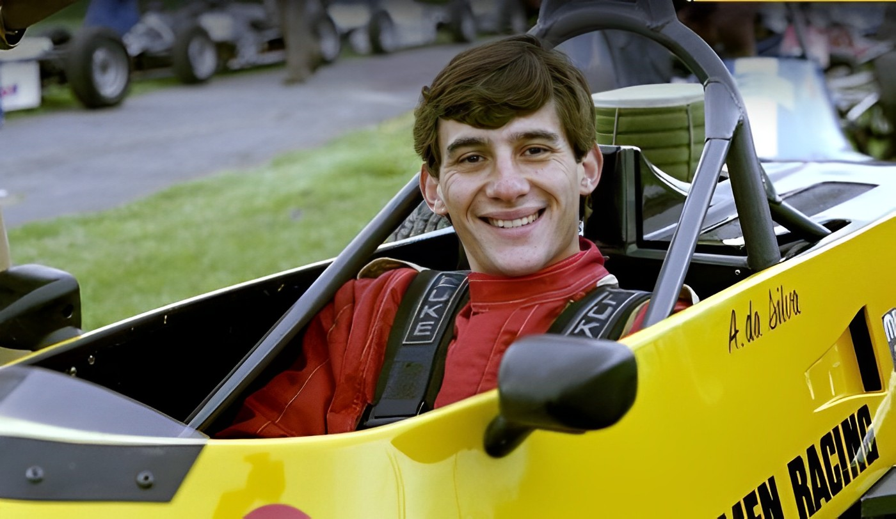
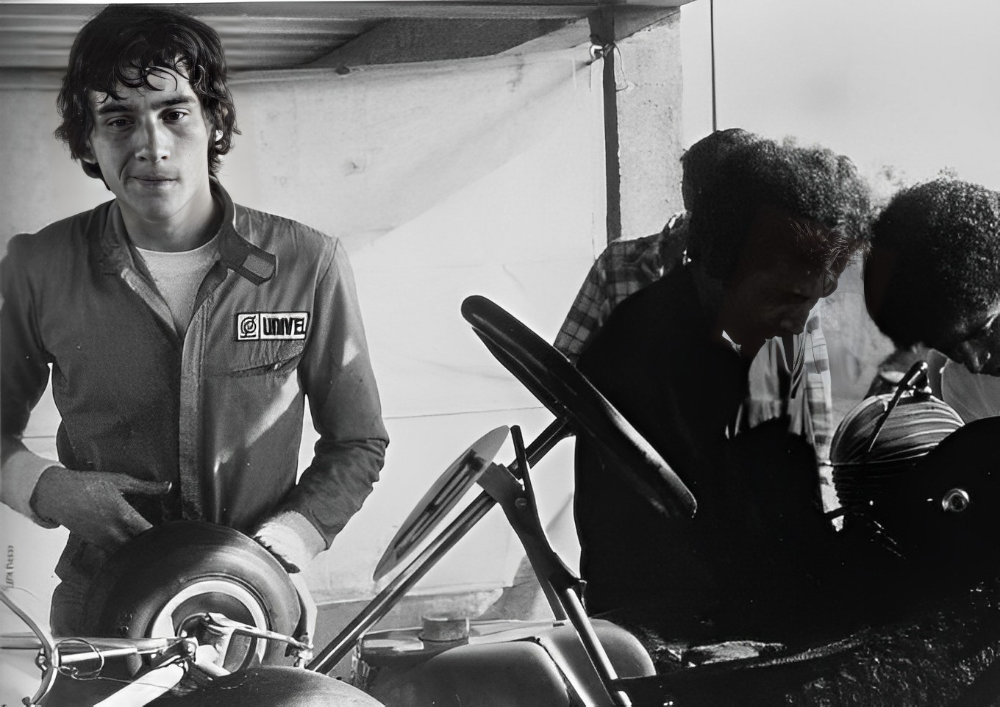
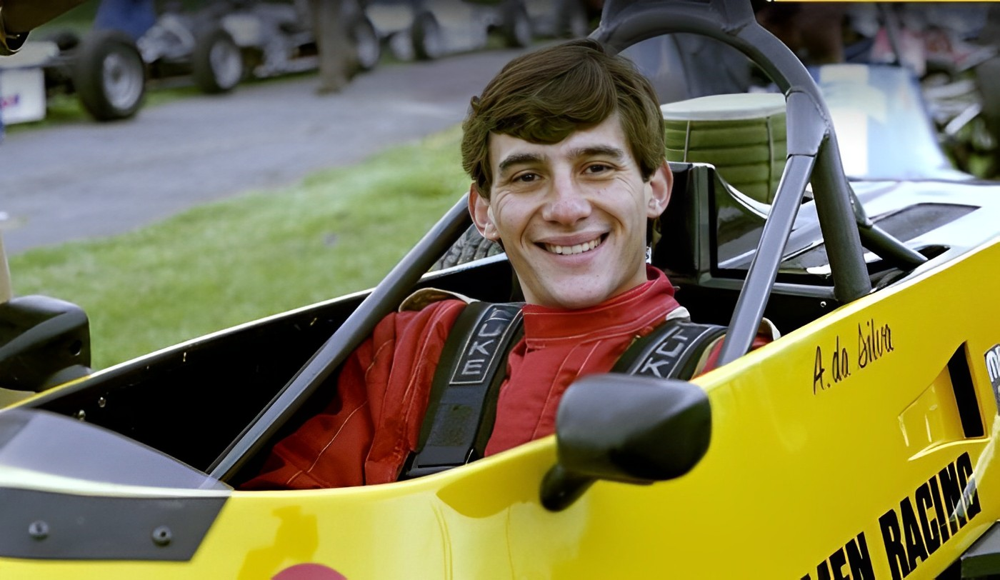

Childhood
As a child, Ayrton had problems with coordination and this fact prompted his father to give him a card with a 1 hp lawn mower engine when Senna was 4 years old. Because he could not legally compete in karting until he was 13, he won his first race on July 1, 1973. Karting championships followed in 1977, 1978, 1979, 1980 and 1981.

 




